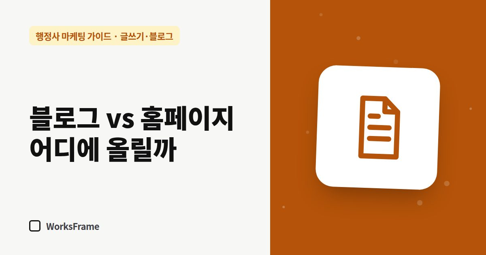

글쓰기·블로그
행정사 글, 네이버 블로그와 홈페이지 중 어디에 올릴까
한 줄 답
오래 쓸 업무 안내는 홈페이지에, 지금 필요한 소식은 블로그에 올리세요. 같은 글을 그대로 복사하지 말고 ‘요약 + 원문 링크’로 이어 주세요.

글을 하나 썼다면 어디에 올릴지부터 고민됩니다. 결론은 둘 다 쓰되, 역할을 나누는 것입니다.
두 곳의 차이
| 구분 | 네이버 블로그 | 홈페이지 |
|---|---|---|
| 잘 걸리는 곳 | 네이버 검색 | 구글·AI 검색, 네이버 웹문서 |
| 글의 수명 | 최신 글 위주로 흘러감 | 고정 메뉴로 오래 남음 |
| 소유 | 플랫폼 안 | 사무소 소유 |
| 어울리는 글 | 소식, 사례, 시기성 안내 | 업무 안내, 절차·서류, FAQ |
나누는 기준
- 오래 유효한 안내 → 홈페이지 (예: 공장등록 절차, 체류자격 변경 준비서류)
- 지금 필요한 소식 → 블로그 (예: 연휴 상담 안내, 이번 달 바뀐 서식)
- 사례·후기 → 블로그에 쓰고, 홈페이지 사례 페이지에 요약
같은 글을 그대로 복사하면?
완전히 같은 글을 두 곳에 올리면 검색엔진은 둘 중 하나만 대표로 보여 주는 경우가 많습니다. 어느 쪽이 대표가 될지 내가 정할 수 없습니다. 대신 이렇게 하세요.
- 홈페이지에 원문(자세한 안내)
- 블로그에는 요약 + 상황 사례 + 원문 링크
- 제목과 첫 문단을 다르게
한 편으로 두 번 쓰는 흐름
- 홈페이지에 업무 안내 원문 게시
- 블로그에 “이런 상황이라면” 사례 중심으로 다시 쓰고 원문 링크
- 네이버 플레이스 소식에 한 줄 요약 + 링크
자주 묻는 질문
블로그만 먼저 시작해도 될까요?
됩니다. 다만 나중을 위해 글 원고를 따로 보관해 두세요. 홈페이지를 만들 때 업무 안내의 재료가 됩니다.
블로그 글을 홈페이지로 옮기면 블로그 글은 지워야 하나요?
지우지 않아도 됩니다. 홈페이지 쪽을 더 자세한 최신판으로 고치고, 블로그 글 끝에 최신 안내 링크를 달아 두세요.